Populaire
Populaire
Ganvié
La Venise de l'Afrique
Le plus grand village lacustre d'Afrique, construit sur pilotis pour échapper à la traite des esclaves.
 Culture
Culture
Ouidah
Berceau du Vaudou
Route des Esclaves, Temple des Pythons et Musée d'Histoire. Une ville chargée de spiritualité.
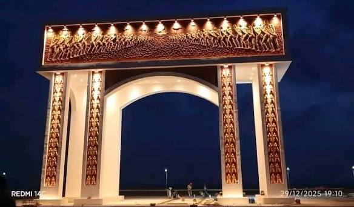
HistoirePorte du Non-Retour
Mémorial de l'esclavage
Monument poignant rappelant le départ forcé des esclaves vers les Amériques.
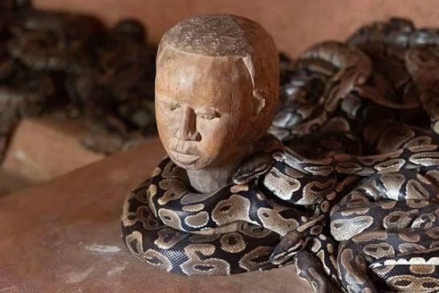
SpiritualitéTemple des Pythons
Sanctuaire vaudou
Temple sacré où vivent des pythons royaux considérés comme des divinités.
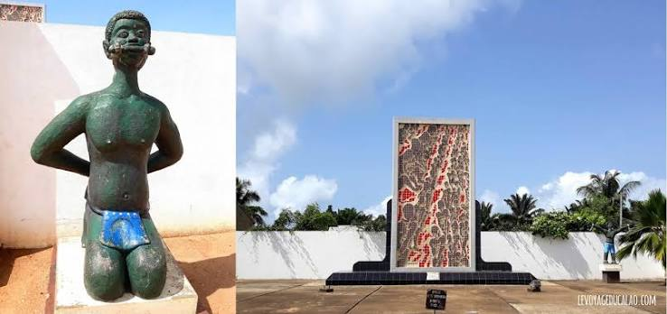
MémoireRoute des Esclaves
Parcours mémoriel
4 km de marche sur les traces des esclaves, de la place de vente à la plage.
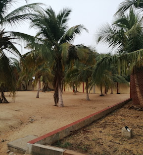
PlageGrand-Popo
Station balnéaire
Plages de sable doré, embouchure du Mono et mangroves. L'endroit idéal pour se détendre.
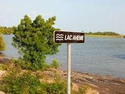
NatureLac Ahémé
Écosystème lagunaire
Navigation sur le lac, pêche traditionnelle et observation des oiseaux.
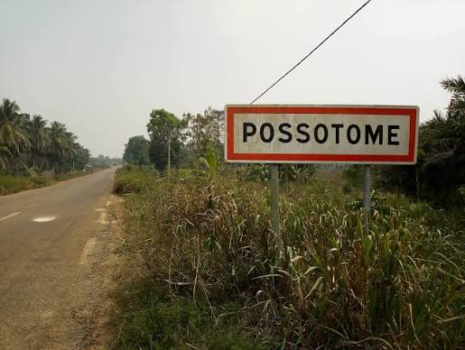
Bien-êtrePossotomé
Sources thermales
Sources d'eau chaude naturelles et initiation aux rites vaudou locaux.
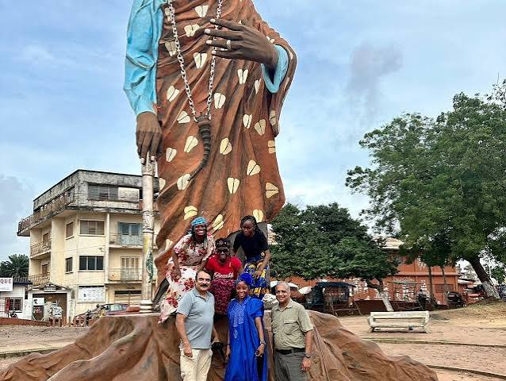
CulturePorto-Novo
Capitale culturelle
Musée Honmè, Jardin des Plantes et influence portugaise. Une ville calme et riche en histoire.
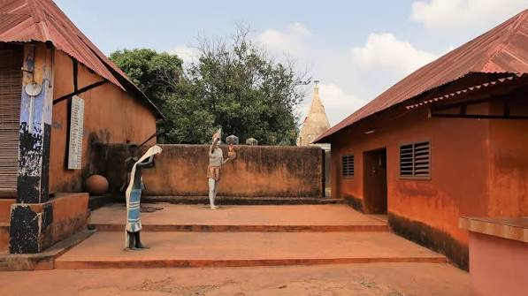
MuséeMusée Honmè
Palais royal
Ancien palais royal transformé en musée, témoignant de l'histoire du royaume de Porto-Novo.
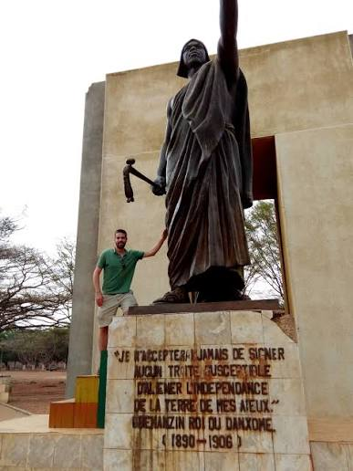
UNESCOAbomey
Palais Royaux UNESCO
Ancienne capitale du Dahomey, célèbre pour ses palais royaux et ses bas-reliefs historiques.
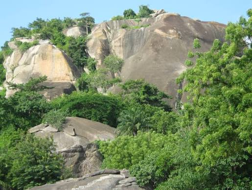
CollinesDassa
Ville des 41 collines
Escalade des collines sacrées, grottes et culture Yoruba Idaasha.
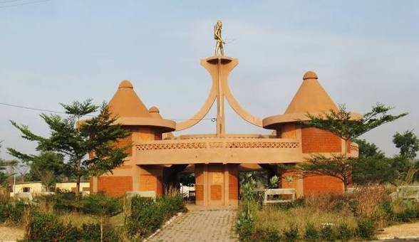
CultureNatitingou
Porte de l'Atacora
Musée régional, fabrication du beurre de karité et point de départ vers le nord.
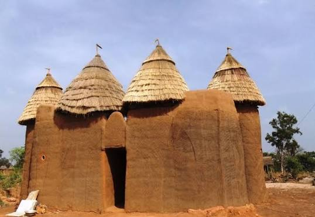
ArchitectureTata Somba
Forteresses traditionnelles
Architecture fortifiée unique du peuple Batammariba, classée au patrimoine mondial.
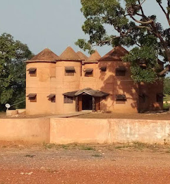
AuthentiqueBoukoumbé
Village traditionnel
Village authentique pour découvrir la vie quotidienne et l'artisanat local.
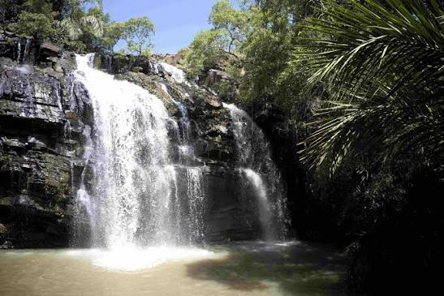
NatureChutes de Kota
Cascades sauvages
Chutes d'eau impressionnantes dans un cadre naturel préservé.
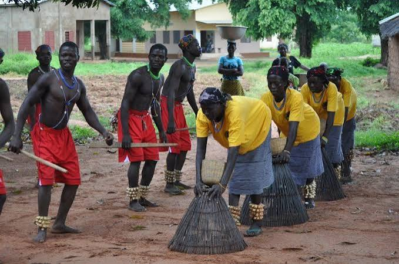
CascadesTanongou
Cascades pittoresques
Cascades en escalier parfaites pour la baignade et la randonnée.
 Safari
Safari
Parc de la Pendjari
Safari sauvage
Éléphants, lions, buffles et antilopes dans la dernière grande réserve d'Afrique de l'Ouest.
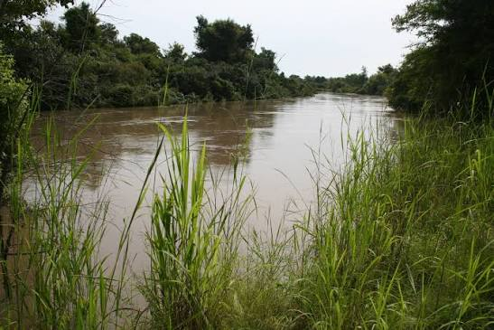
RéserveParc W
Réserve transfrontalière
Réserve naturelle partagée entre le Bénin, le Niger et le Burkina Faso.
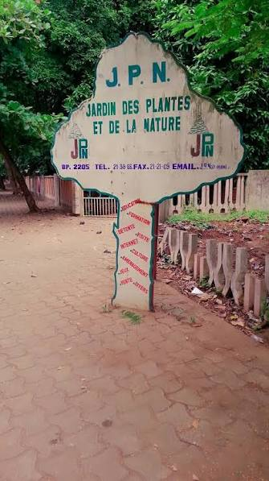
BotaniqueJardin des Plantes
Jardin botanique
Collection de plantes tropicales et espace de détente au cœur de Porto-Novo.